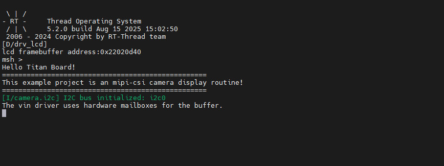
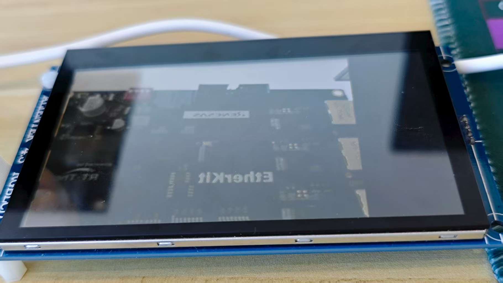

MIPI CSI Camera Example Guide
English|Chinese
Introduction
This example demonstrates how to use the MIPI CSI (Camera Serial Interface) on the Titan Board to connect an OV5640 camera, and display the captured images on an RGB565 LCD screen via the RT-Thread LCD framework.
Key functionalities include:
Initialize the MIPI CSI camera interface to capture real-time video streams
Configure OV5640 camera parameters (resolution, frame rate, output format)
Display captured images using the RT-Thread LCD driver
Support image format conversion (YUV422 → RGB565)
RA8 Series MIPI CSI Features
The RA8 series MCU integrates a MIPI CSI hardware module for high-speed, low-power camera data acquisition, suitable for HD video and real-time image processing.
1. Hardware Interface Features
Interface Type
MIPI CSI-2 D-PHY interface for high-bandwidth serial data transmission
Supports 1–4 data lanes
Synchronization is handled by MIPI D-PHY; no additional HSYNC/VSYNC required
Data Rate and Resolution
Supports up to 1.5–2.5 Gbps per lane (depending on MCU series and PHY configuration)
Can drive common camera resolutions: VGA, QVGA, SXGA, UXGA, 1080p, etc.
Camera Compatibility
Compatible with OV5640, IMX219, and other common CMOS cameras
Supports camera register configuration and auto-initialization
2. Image Formats and Processing Capabilities
Supported Image Formats
RAW10 / RAW12 (for algorithm development and image processing)
YUV422 (for video display)
RGB565 (suitable for LCD display)
Image Processing Features
Color space conversion (YUV → RGB)
Image cropping (ROI capture)
Mirror and flip
Hardware accelerated scaling
Hardware Acceleration
MIPI CSI includes built-in DMA to reduce CPU load
Supports high-speed format conversion and scaling
3. DMA Support and Buffering
High-Speed DMA Transfer
Works with MCU DMAC to write images directly to memory or LCD buffer
Reduces CPU intervention and increases frame rate
Multi-Buffer Mechanism
Supports double buffering or ring buffers for continuous video capture
Prevents frame loss and display latency
Flexible DMA Configuration
Configurable buffer start address and size
Supports interrupt callback handling
4. Interrupt Mechanism
Interrupt Types
Frame End Interrupt: triggered at the end of each frame capture
Line End Interrupt (optional)
Error Interrupt: buffer overflow, PHY errors, etc.
Interrupt Features
Supports RT-Thread ISR callbacks
Can work with DMA to enable real-time display
5. Timing and Synchronization Features
Synchronization Method
CSI relies on MIPI D-PHY for clock and data synchronization
No additional HSYNC/VSYNC required
Pixel Clock and Data Alignment
Supports pixel-aligned or byte-aligned data
Automatically handles RAW/YUV/RGB data alignment
6. Performance Optimization
High Throughput
DMA + double buffering enables continuous video capture
Low CPU usage suitable for real-time applications
Reliability
PHY errors or data loss interrupts can trigger exception handling
Supports buffer overflow detection
Flexibility
Supports multiple resolutions and formats
ROI capture and hardware scaling improve display efficiency
7. Application Scenarios
Real-time video display on LCD
Video capture and processing algorithm verification
Embedded vision applications such as surveillance, gesture recognition, and robotics vision
RA8 Series MCU GLCDC (Graphics LCD Controller) Features
The RA8 series MCU (e.g., RA8P1) integrates a GLCDC hardware module for driving TFT/LCD displays, enabling high-speed graphics rendering and video display, supporting multiple resolutions, color formats, and display modes.
1. Hardware Features
Resolution Support
Can drive common resolutions from QVGA (320×240) to WQVGA/XGA
Limited by on-chip RAM and display interface bandwidth
Color Support
Supports 1/4/8/16/24/32-bit color depth
Common formats: RGB565, RGB888
Supports palette mode (CLUT)
Hardware color conversion available
Interface Types
Parallel RGB (TFT LCD interface)
Supports 16/18/24-bit data bus
Direct connection to external LCD panels
Programmable timing: HSYNC, VSYNC, DE, PCLK, RGB output
2. Layers and Display Modes
Layer Support
Single-layer mode (single screen display)
Multi-layer mode (palette or hardware alpha blending)
Supports transparent/semi-transparent overlay
Display Modes
RGB mode (direct color output)
CLUT/Palette mode (indexed color via lookup table)
Configurable scan direction (horizontal/vertical)
3. DMA and Frame Buffer
Frame Buffer Access
GLCDC can directly access on-chip or external SRAM frame buffer
Supports single or double buffering
Supports ring buffer for continuous refresh
DMA Support
Works with MCU DMAC to reduce CPU usage
Can transfer images directly from memory to LCD
Supports line, block, or full-frame transfer
4. Hardware Graphics Functions
Window Cropping and Scaling
Can specify display window area
Supports simple horizontal/vertical scaling
Hardware Graphics Acceleration
Rectangle fill, color replacement
Image transparency processing
Can be combined with CEU or DMA for video display
Color Format Conversion
YCbCr → RGB
RGB888 → RGB565
Hardware accelerated to reduce CPU load
5. Interrupt Mechanism
Interrupt Types
Frame End
Line End (optional)
Access error/overflow
Interrupt Application
Integrates with RT-Thread ISR
Can trigger buffer update or double-buffer swap on frame completion
Enables smooth animations and video display
6. Performance Optimization
Double Buffer Mechanism
Reduces flicker
CPU can render next frame in background
GLCDC hardware automatically switches display buffer
Frame Rate Control
Programmable clock and line/frame synchronization
Supports common refresh rates (30fps, 60fps)
CPU Offload
Many graphics operations performed in hardware
DMA + GLCDC combination enables efficient image display
Compilation & Download
RT-Thread Studio: In RT-Thread Studio’s package manager, download the Titan Board resource package, create a new project, and compile it.
After compilation, connect the development board’s USB-DBG interface to the PC and download the firmware to the development board.
Run Effect
After resetting the Titan Board, the terminal will output the following message:

Here is the image displayed on the LCD screen:
